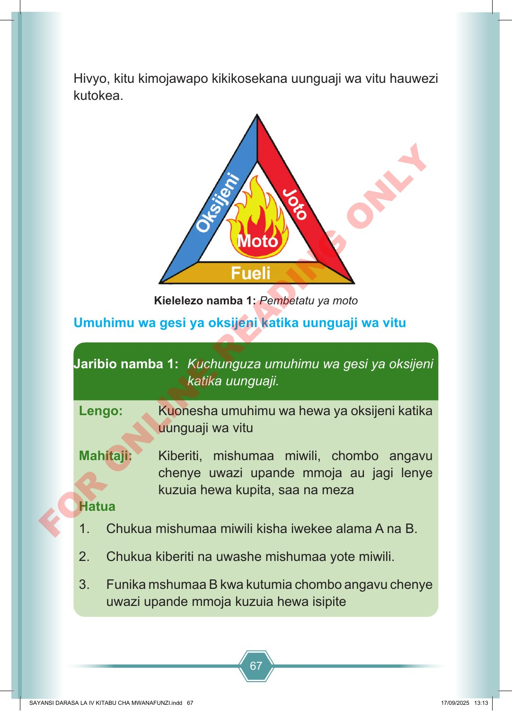

67 Hivyo, kitu kimojawapo kikikosekana uunguaji wa vitu hauwezi kutokea. Kielelezo namba 1: Pembetatu ya moto Umuhimu wa gesi ya oksijeni katika uunguaji wa vitu Lengo: Kuonesha umuhimu wa hewa ya oksijeni katika uunguaji wa vitu Mahitaji: Kiberiti, mishumaa miwili, chombo angavu chenye uwazi upande mmoja au jagi lenye kuzuia hewa kupita, saa na meza Hatua 1. Chukua mishumaa miwili kisha iwekee alama A na B. 2. Chukua kiberiti na uwashe mishumaa yote miwili. 3. Funika mshumaa B kwa kutumia chombo angavu chenye uwazi upande mmoja kuzuia hewa isipite Jaribio namba 1: Kuchunguza umuhimu wa gesi ya oksijeni katika uunguaji. SAYANSI DARASA LA IV KITABU CHA MWANAFUNZI.indd 67 SAYANSI DARASA LA IV KITABU CHA MWANAFUNZI.indd 67 17/09/2025 13:13 17/09/2025 13:13 F O R O N L I N E R E A D I N G O N L Y